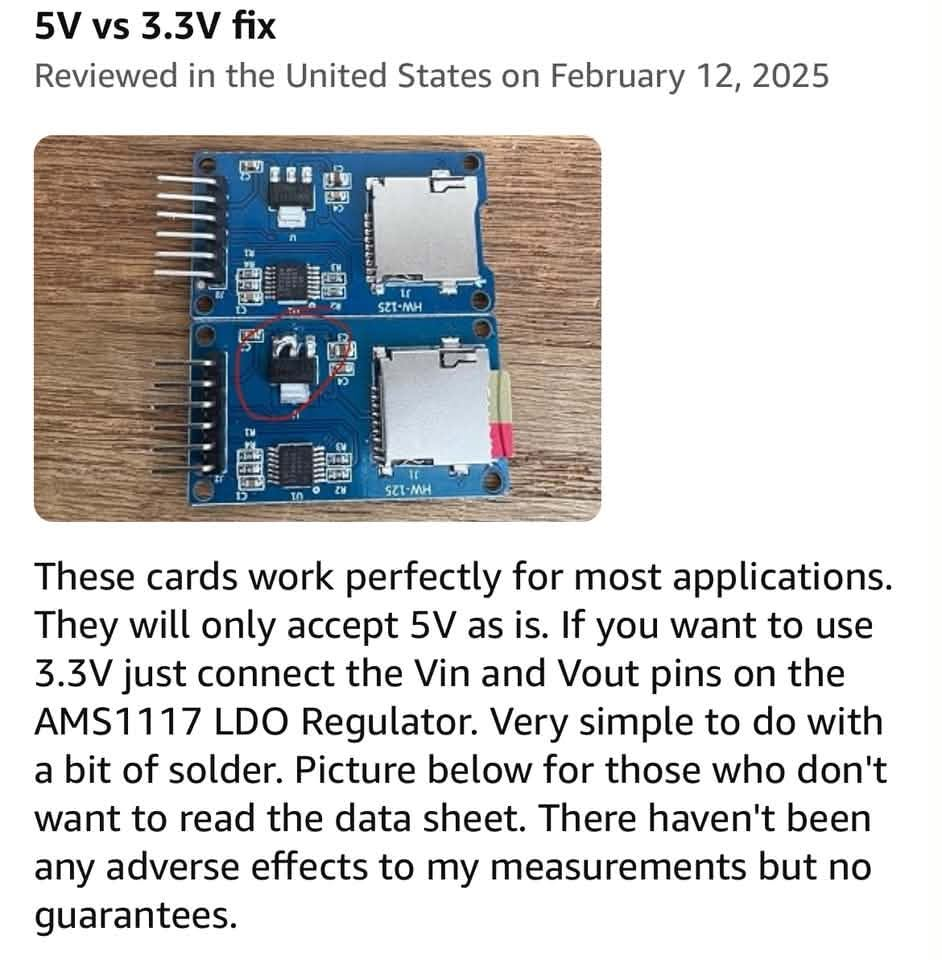
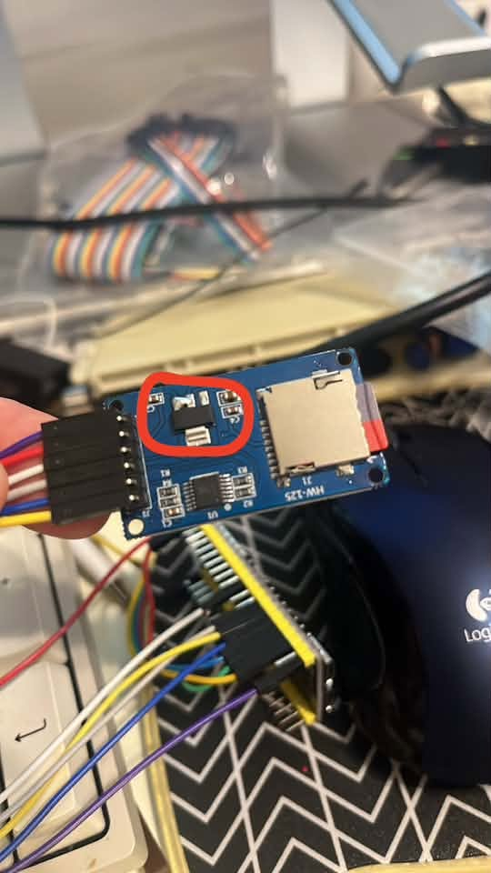
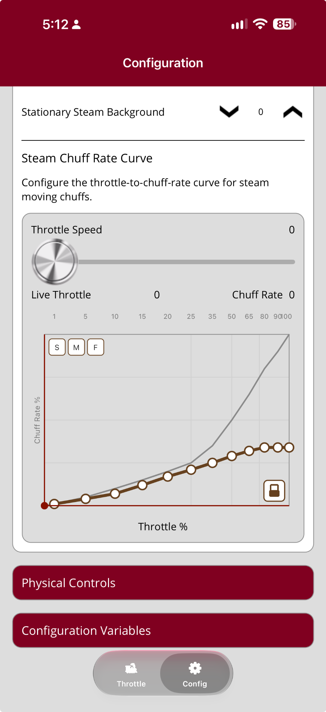
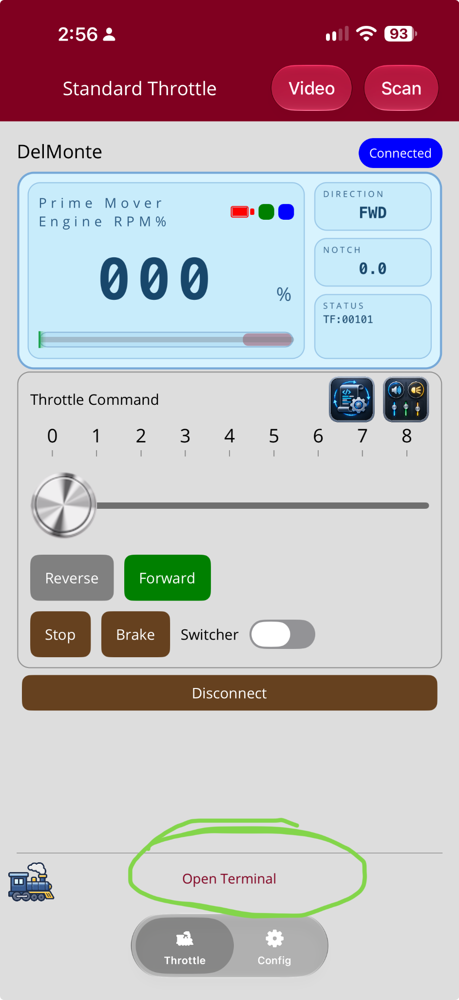
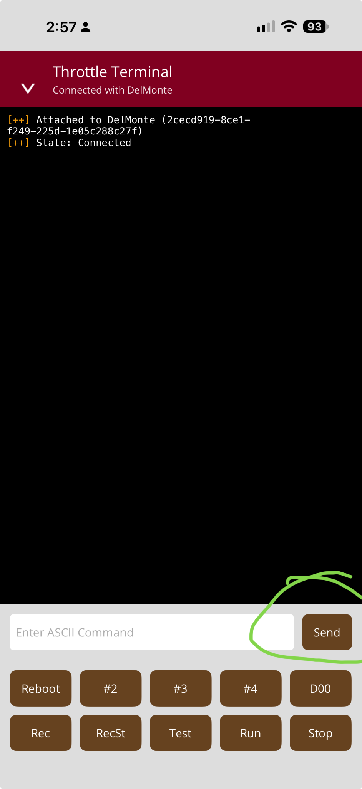
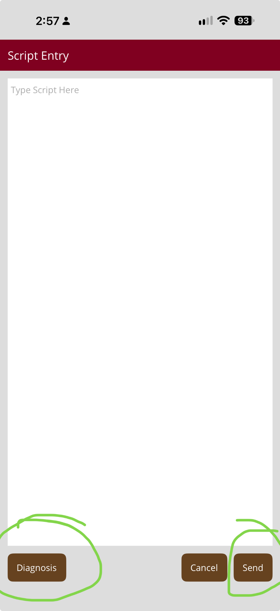
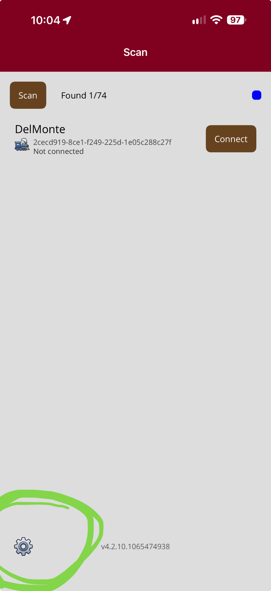
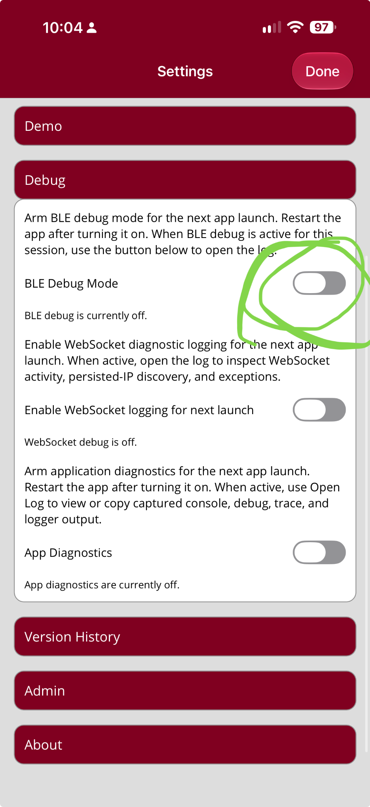
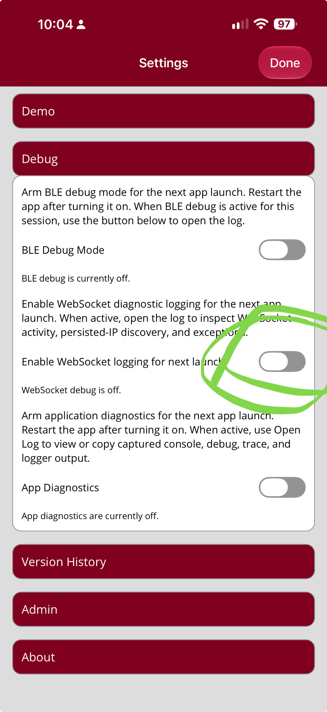
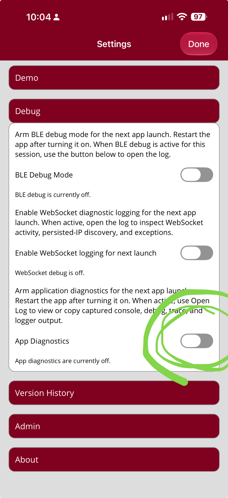

I'm new to this. Where should I start?
Start with the Getting Started with Poor Man's Throttle page. It brings the hardware, installation choices, firmware, app, sound, and reference material together in one place.
For your first PMT build, take it in this order:
-
Decide how you want to use PMT.
Choose the installation style that fits your railroad:
- PMT between the transformer and track — no locomotive modifications.
- PMT inside the locomotive using track power.
- Dead Rail / battery powered.
-
Start with the basic PMT recipe.
A basic locomotive controller needs:
- an ESP32 controller
- a regulated 5V power supply
- a motor driver
- Choose hardware that fits your locomotive. Consider the available space, motor voltage, and motor current when choosing the ESP32 and motor driver.
- Install the PMT firmware and app. Flash the correct firmware for your ESP32 board, install the PMT app on your phone or tablet, and verify that the app can find the PMT device.
- Follow the installation guide for your motor driver. Wire and test the basic motor-control system before adding optional features.
- Get the locomotive running first. Once speed, direction, stop, and braking work correctly, add the extras you want—sound, lights, battery monitoring, automation, physical controls, WiFi, and so on.
You do not need to understand CVs, Terminal commands, automation, or advanced configuration before building your first basic PMT system. The project is designed so you can start simple and add features later.
More information: Getting Started with Poor Man's Throttle · Full Hardware Recipe · PMT Power Configuration Guide
What are the basic parts required for an installation of PMT including sound?
A basic PMT installation with sound has three main parts for controlling the locomotive, plus the audio hardware:
- ESP32 controller — the brains of PMT.
- 5V power converter — supplies the ESP32 with the power it needs.
- Motor driver — controls power to the locomotive motor.
- I2S audio amplifier — such as a MAX98357A, to produce the sound.
- Speaker — connected to the audio amplifier.
- microSD card — stores the locomotive sound files.
Some ESP32 boards also require a separate microSD card reader. The ESP32-S3-CAM version has a built-in microSD slot, so it does not need the separate reader.
More information: Full Hardware Recipe · PMTPlayer Audio Installation Guide
I don't need sound. What are the basic parts required for an installation of PMT without sound?
If you do not want sound, a basic PMT installation only needs three main electronic components:
- ESP32 controller — the brains of PMT.
- 5V power converter — provides the correct power for the ESP32.
- Motor driver — controls the locomotive motor. Choose one that is suitable for the motor and current requirements of your installation.
Your locomotive's motor and battery or other power source connect to these components, but they are not additional PMT electronics.
You do not need the audio amplifier, speaker, or microSD card used for a sound installation. Sound can always be added later.
More information: Full Hardware Recipe · PMT Installation Options
What options are available for locomotive power, and what are some tips and tricks?
PMT supports several different ways to power and control a locomotive. You do not have to convert everything to battery power.
| Power arrangement | How it works | Good choice when… |
|---|---|---|
| PMT between transformer and track | Transformer → PMT → Track → Locomotive | You want wireless control of existing unmodified DC trains. |
| PMT inside locomotive using track power | Track → locomotive pickups → PMT → motor | You want individual locomotive control while keeping powered rails. |
| Dead rail / onboard battery | Battery → PMT → motor | You want the locomotive completely independent of track power. |
| Track + battery hybrid | Track remains powered for cars/accessories, but locomotive motor uses its own battery and PMT | You want battery-powered locomotive control while still using track power for lights and accessories. |
1. Transformer → PMT → Track
This is usually the simplest way to modernize a traditional DC layout.
Transformer → PMT Controller → Track → Locomotive
The supplied PMT guide recommends leaving the transformer at a constant full output and letting PMT control the track using PWM.
Advantages include:
- no locomotive modifications
- wireless phone control
- works well when locomotive space is limited
- easy way to convert an existing DC layout
Tip: The PMT controls the entire powered track section, so locomotives on that section receive the same controlled track power.
2. PMT inside the locomotive with track power
Here the rails remain powered, but the PMT electronics are installed inside the locomotive.
Track → Pickups → PMT → Motor
This allows individual locomotive control, even when several locomotives share powered track.
It is also useful when you want the rails to continue powering things such as passenger-car lighting or layout accessories.
3. Dead rail — onboard battery
With dead rail, the rails do not provide propulsion power.
Battery → Fuse → PMT → Motor
The locomotive carries its own battery and PMT electronics.
This gives you:
- no dependence on clean rail for motor power
- independent control of multiple trains
- operation where electrical pickup is unreliable
- a completely self-contained locomotive
The electronics can be placed in the locomotive, tender, or even a dedicated battery car if space is limited.
4. Track power + onboard battery
PMT also documents a hybrid arrangement.
The locomotive motor is isolated from the rails and runs from its onboard battery, while the rails remain powered for things such as:
- passenger-car lighting
- buildings
- accessories
- other traditional track-powered equipment
This can give you much of the freedom of dead rail without giving up useful powered-track infrastructure.
Useful power tips
- Use a fuse. The supplied build guide recommends appropriate overcurrent protection in the main motor-power path.
- Don't power the ESP32 directly from locomotive voltage. Use a regulated 5V power module for the ESP32.
- Use a buck converter when necessary. If your battery voltage is higher than you want the locomotive motor to receive, use a buck converter in the motor-power path.
- Match the power source to the motor. Do not assume that a higher-voltage battery is automatically better. Choose the voltage appropriate for your locomotive, motor, and installation.
- Battery monitoring is optional. Adding an INA219 lets PMT report voltage, current, and power and optionally provide low-voltage warning, throttle limiting, and shutdown protection.
- Think about where the hardware will fit before choosing the power method. PMT electronics can be placed in the locomotive, tender, battery car, external enclosure, or trackside controller box depending on the installation.
Example buck-converter arrangement:
20V battery → buck converter → about 15V → motor driver
Adjust the buck converter with a multimeter before connecting the motor driver.
For a small locomotive with little internal room, PMT between the transformer and track may be much easier than putting a battery and electronics onboard.
More information: Think Outside the Battery · Installation Options · Build Guide · Why PMT is Better for Traditional DC Layouts
I just want to use PMT to power my old train set with no locomotive modifications. How can I do that?
If you have a traditional DC track-powered train set, you can install PMT completely outside the locomotive.
Place the PMT controller between your transformer and the track:
Transformer → PMT Controller → Track → Locomotive
The transformer supplies the power, while PMT controls the power going to the rails. Your locomotive remains unchanged and simply picks up its power from the track as it always has.
A small project box can hold the PMT electronics, such as the ESP32, motor driver, fuse, and wiring terminals. This makes the system easy to install or remove without modifying your trains.
One thing to remember: PMT controls the powered section of track, so any locomotive on that same powered section receives the same track power.
More information: PMT Power Configuration Guide · Installation Options — Trackside DC Controller Box
Can I use Track Power to power PMT? What does that look like?
Yes. PMT can be installed inside the locomotive and powered from the track.
In this setup, the track is kept at a constant voltage from your transformer. The locomotive's existing track pickups bring that power into PMT.
Track Power → Locomotive Pickups → PMT Electronics → Motor
PMT then controls the locomotive's motor instead of varying the voltage on the track. A 5V power module is used to provide the correct power for the ESP32, while the motor driver controls the locomotive motor.
Because the track stays powered, it can also continue supplying power to things such as lights, buildings, and other accessories.
If each locomotive has its own PMT controller, multiple PMT-equipped locomotives can be controlled independently while sharing the same powered track.
More information: PMT Power Configuration Guide · PMT Build Guide · Wiring Reference
How do I install Dead Rail/Battery powered PMT?
With a Dead Rail installation, the locomotive carries its own battery and does not depend on the rails for power.
A basic installation looks like this:
Battery → Fuse → Motor Driver → Locomotive Motor
The same battery also feeds a 5V power module, which supplies the correct power to the ESP32:
Battery → 5V Power Module → ESP32
If the battery voltage is too high for your locomotive motor, an optional buck converter can be placed before the motor driver to reduce the voltage.
The battery and PMT electronics can be installed inside the locomotive, in a tender, or in a battery car, depending on how much space you have.
With true Dead Rail operation, the rails do not need to be powered. Each PMT-equipped locomotive carries its own power source and can be controlled independently.
More information: PMT Power Configuration Guide · Installation Options · PMT Build Guide
I have an ESP32-S3-CAM board (N16R8) with dual USB-C inputs. Does it matter which input I connect to?
The ESP32-S3-CAM N16R8 board used in the PMT hardware examples has two USB-C connectors, but PMT does not assign a specific left/right connector for every board variant.
For installing or updating firmware, use the USB-C port that provides a USB data/serial connection to your computer. Use a known-good USB data cable, not a charge-only cable. When connected correctly, the ESP32 should appear as a selectable USB/serial device in the PMT firmware installer.
For normal PMT operation, the ESP32 needs a clean, regulated 5V supply.
Important: Dual-USB ESP32-S3-CAM boards are not all wired identically. One connector may be intended for native USB and the other for a USB-to-serial interface. Check the labels printed next to the connectors or the information for your exact board before assuming the two ports are interchangeable.
More information: Full Hardware Recipe
What SD card size should I use and how should I format it for use with PMT?
PMT does not require a large microSD card. A small card is fine — even 128 MB is enough for a typical PMT sound installation.
The important part is formatting the card correctly:
- 128 MB through 2 GB: format as FAT16.
- 4 GB through 128 GB: format as FAT32.
- Do not use exFAT.
Be especially careful with 64 GB and 128 GB cards. They are often sold already formatted as exFAT, so they must be reformatted to FAT32 before PMT can use them.
If you are buying a card specifically for PMT, there is generally no need to buy a very large one.
More information: PMTPlayer Audio Installation Guide
How do I tell if my IBT-2 Motor Driver is good or bad?
You can bench-test the IBT-2 with a 12V power source, a separate 5V logic source, and a small DC motor.
With the board powered correctly and both enable pins turned on, test one direction at a time:
- RPWM HIGH / LPWM LOW — the motor should turn one direction.
- RPWM LOW / LPWM HIGH — the motor should turn the opposite direction.
The results are simple:
- Motor runs both directions: the IBT-2 is good.
- Motor runs in only one direction: one side of the IBT-2 is bad.
- Motor runs in neither direction: check the wiring and power before assuming the board is bad.
Before condemning the board, make sure VCC is 5V, the grounds are connected together, R_EN and L_EN are HIGH, and the motor and power supply are known to be good.
Important: Do not put 12V into the IBT-2's VCC logic pin.
More information: IBT-2 Quick Test · IBT-2 Test Video
How do I determine what Motor Driver Type I should use for my Motor Driver?
The Motor Driver Type tells PMT how to control the inputs on your motor driver board. It does not describe how much voltage or current the board can handle.
For the motor drivers shown on the PMT Getting Started page, use:
| Motor Driver | PMT Motor Driver Type |
|---|---|
| BTS7960 / IBT-2 | DUAL_PWM |
| L298N | PWM_BIDIR |
| TB6612FNG | PWM_BIDIR |
| L9110S | DUAL_INPT |
If your motor driver is not listed, look at the labels on its control pins:
RPWM+LPWM→ DUAL_PWMPWM+DIR→ PWM_DIRPWM/EN+IN1+IN2→ PWM_BIDIRIN1+IN2only → DUAL_INPT
For a TB6612FNG, use its dedicated PWM input plus its two direction inputs, and hold STBY HIGH so the driver is enabled.
Choosing the wrong Motor Driver Type can keep the motor from running correctly even when the power wiring is correct. Choosing the type is also separate from making sure the board has enough voltage and current capacity for your locomotive.
More information: Motor Driver Modes · PMT Installation Guide · Wiring Reference
What is Start Assist / Kick, when would I need to use it and how?
Start Assist, also called Kick, gives the motor a brief extra push when the locomotive begins moving from a stop.
Some motors need more power to start turning than they need once they are already moving. Without Start Assist, you may raise the throttle and see the locomotive hesitate, hum, or suddenly jump into motion.
When should I use it?
Start Assist may help if:
- the locomotive hesitates when starting at low speed;
- the motor needs extra power to break away from a stop; or
- you have adjusted Minimum Start Throttle, but starting is still inconsistent.
If your locomotive already starts smoothly, you generally do not need Start Assist.
How do I configure it?
In the PMT app, open:
Configuration → Motor & Drive Behavior
Use the Start Assist / Kick settings there to tune how much help the motor receives when starting.
This is the recommended way to adjust it because the Configuration screen handles the underlying settings for you.
Behind the scenes, Start Assist is stored in CV9 — Kick Configuration:
CV9=<throttle>,<ms>,<rampDownMs>,<maxApply>
The documented default is:
CV9=0,0,80,15
So you normally do not need to manually edit CV9. The Motor & Drive Behavior screen changes the CV9 configuration behind the scenes.
Start Assist vs. Minimum Start Throttle
- Minimum Start Throttle sets the minimum useful motor-output level when the locomotive is moving.
- Start Assist / Kick provides a temporary boost to help the motor get started from a stop.
A good approach is to set Minimum Start Throttle first, then add a small amount of Start Assist only if the locomotive still has difficulty beginning smoothly.
More information: Minimum Start Throttle and Maximum Throttle · Configuration Variables Reference · Troubleshooting Guide
I do not see a battery icon on my PMT screen. How do I get it to show up and monitor my battery?
PMT's battery icon appears when INA219 battery monitoring is installed and active.
The INA219 is a small sensor board that lets PMT measure:
- battery voltage
- current draw
- power usage
- low-voltage conditions
What do I need?
Install an INA219 current/voltage monitor in the battery power path and connect its I²C SDA and SCL lines to the ESP32.
The INA219 must be installed in series with Battery +:
Battery + → INA219 → PMT power input
Your existing PMT wiring otherwise stays in place.
How do I enable it?
After the INA219 is wired correctly, open Configuration → Battery Management.
Enable the INA219 battery monitor there.
Behind the scenes, this enables:
CV30=1
Battery monitoring is disabled by default, so the battery indicator will not appear until the sensor is installed and monitoring is enabled.
Once the INA219 is active and sending telemetry, the throttle screen can show a battery indicator button near the status area.
Tap the battery button to open the Battery Telemetry drawer and view live battery information.
Can PMT protect the battery too?
Yes. Battery Management also provides optional settings for:
- low-voltage warning
- throttle limiting
- low-voltage shutdown
- recovery voltage
- battery-disconnect detection
- optional low-voltage indicator LED
Those protection thresholds should be configured for the battery chemistry and cell count you actually use. You do not need to enable the protection thresholds just to view battery telemetry.
If the INA219 is installed and enabled but the icon still does not appear, verify its SDA/SCL wiring, I²C address, power, and sensor detection.
More information: INA219 Battery Management · PMT INA219 Battery Monitor Installation Guide
How do I control LED lights?
PMT can control LED lights directly from the ESP32 using its Output Controls.
For each light, you configure:
- Name — such as Headlight, Reverse Light, or Ditch Light.
- Pattern — for example Solid, Blink, Ditch Light, Strobe, or other lighting effects.
- GPIO Pin — the ESP32 output pin connected to that light.
- Direction — Both, Forward, or Reverse.
For example, a headlight can be configured as LED Solid / Forward, while a rear light can be LED Solid / Reverse. PMT will then only operate each light in the appropriate direction.
PMT supports up to 12 firmware FX outputs, so you can configure several independent lights and effects.
LEDs connected directly to an ESP32 GPIO must use an appropriate series resistor, because the GPIO output is 3.3V. Each independently controlled LED output should also use its own GPIO pin.
More information: Lighting and Auxiliary Outputs · Output Control User Guide · Wiring Reference
How would I go about adding a headlight and/or reverse headlight?
PMT can control a forward headlight, a reverse light, or both using Output Controls.
Wiring
Configured ESP32 GPIO → series resistor → LED → GND
PMT's ESP32 GPIO outputs are 3.3V, so the LED should use a series resistor. The supplied lighting guide recommends a practical 100Ω–220Ω range for direct GPIO indicator use.
Do not reuse the firmware's onboard status LED pin for an accessory light.
Configure a forward headlight
Open Configuration → Output Control, then add an output with:
- Name: Headlight
- Pattern:
LED Solid - GPIO Pin: the GPIO connected to the LED
- Direction:
Forward - Momentary: Off
With the control turned on, PMT will allow the light to operate when the locomotive is selected Forward and suppress it when direction changes to Reverse.
Configure a reverse headlight
Add another Output Control:
- Name: Reverse Light
- Pattern:
LED Solid - GPIO Pin: a different GPIO
- Direction:
Reverse - Momentary: Off
This light is allowed when the locomotive is in Reverse.
Using both together
PMT supports up to 12 firmware FX slots, so the forward and reverse lights can be separate outputs.
| Function | Default direction | Classic ESP32 default pin | ESP32-S3 default pin |
|---|---|---|---|
| Headlight / FX1 | Forward | GPIO4 | GPIO15 |
| Reverse Light / FX2 | Reverse | GPIO5 | GPIO16 |
Those are firmware defaults, not mandatory pins. The actual GPIO can be changed in configuration as long as it is a valid, non-conflicting output pin.
Recommended: use one Headlight button for both lights
PMT's Linked FX feature lets one visible Output Control operate a second Output Control at the same time. When a control is used as a Linked FX target, it is hidden from the normal standalone Output Control button list.
Configure the two outputs like this:
-
Headlight
- Pattern =
LED Solid - GPIO = forward headlight GPIO
- Direction =
Forward - Momentary = Off
- Linked FX = Reverse Light
- Pattern =
-
Reverse Light
- Pattern =
LED Solid - GPIO = reverse headlight GPIO
- Direction =
Reverse - Momentary = Off
- Pattern =
Because Reverse Light is the Linked FX target, it is hidden from the normal throttle Output Control list. You see just one Headlight button.
Forward selected → Headlight ON, Reverse Light OFF
Reverse selected → Headlight OFF, Reverse Light ON
Both FX are switched together logically, but each light's own Direction setting determines which physical LED is allowed to illuminate.
The supplied lighting documentation also notes that Headlight and Reverse Light are linked by default, providing this paired directional-light behavior without requiring two separate user-facing buttons.
More information: Lighting and Auxiliary Outputs · Output Control User Guide · Wiring Reference
What patterns exist for LED lights and what do they mean?
PMT provides several built-in LED patterns that you can select in Output Control.
| Pattern | What it does |
|---|---|
| LED Solid | Stays steadily ON while active. |
| LED Double Blink | Two short flashes, then a pause. |
| LED FRED | A FRED-style sequence: a single flash followed by a closely spaced double flash. |
| LED Blink + | User-configurable blink timing. |
| LED Blink - | Same blink timing as +, but shifted half a cycle so two lights can alternate. |
| LED Ditch + | Built-in ditch-light pulse. |
| LED Ditch - | Same ditch-light pulse, shifted half a cycle for alternating ditch lights. |
| LED Strobe + | Repeating double-strobe burst. |
| LED Strobe - | Same strobe pattern, shifted half a cycle. |
| LED Rotary + | Smooth rise-and-fall effect like a rotating beacon. |
| LED Rotary - | Same rotary effect running opposite the + version. |
| LED Mars + | Smooth brightness sweep that imitates a Mars light. |
| LED Mars - | Same Mars effect, shifted half a cycle. |
| LED Gyralite + | Smooth Gyralite-style brightness pulse. |
| LED Gyralite - | Same Gyralite effect, shifted half a cycle. |
| LED Firebox Flicker | Fast, irregular brightness changes with occasional darker dips, intended to look like fire. |
| LED Lantern Flicker | A softer, slower flicker than Firebox Flicker. |
| LED Dynamo | Takes about 3 seconds to build up, then stays near full brightness with small variations. |
| LED Incandescent | Smoothly fades from dark to full brightness in about 420 ms to imitate a traditional bulb. |
A useful beginner rule is that the + and - versions are paired effects. Use them on two different GPIO outputs when you want two lights to alternate or run opposite one another—for example, left and right ditch lights.
Only LED Blink + / LED Blink - use the configurable Blink Timing field. For example:
1000,250
means a 1000 ms total cycle with the LED ON for 250 ms. The - version starts half a cycle later.
The Ditch, Strobe, FRED, Rotary, Mars, and Gyralite patterns use their own built-in timing instead.
Each LED pattern uses a firmware FX slot and a GPIO pin, and can be restricted by Direction to Both, Forward, or Reverse.
More information: Output Control User Guide
How do I turn off the LED on my ESP32?
PMT controls the ESP32's onboard status LED with CV21 — Onboard LED Output Gate.
You have three choices:
CV21=0— keep the onboard status LED off all the time.CV21=1— normal behavior. PMT controls the LED using its normal colors and blink patterns. This is the default.CV21=2— keep the LED off while PMT is connected by Bluetooth or WebSocket, but allow the normal LED indication when it is disconnected.
For most people who simply want the ESP32 light turned off, use:
CV21=0
You can change CV21 from the app's Configuration Variables screen, or from the Terminal.
To check the current value:
CV21?
To turn the onboard LED off:
CV21=0
To restore normal LED behavior later:
CV21=1
If you want the status LED available for troubleshooting when disconnected, but dark during normal operation, use:
CV21=2
This setting only gates the firmware-controlled onboard status LED. It does not disable LEDs that you have configured separately as PMT Output Controls.
More information: Configuration Variables Reference
How do I get sound to work?
To use PMTPlayer sound, you need an I2S audio amplifier, speaker, and microSD card along with your ESP32.
The basic setup is:
- Connect the audio amplifier and speaker using the wiring for your specific ESP32 board.
- Prepare the microSD card using FAT16 or FAT32 — not exFAT.
- Download PMTPlayer sounds and copy the WAV files into the correct folder on the card:
/diesel/for Diesel sounds/steam/for Steam sounds
- Insert the microSD card and power up PMT.
- Enable audio and select Diesel or Steam.
PMT audio is disabled by default, so a completely correct installation can still be silent until audio is turned on.
If you use an ESP32-S3-CAM, the microSD slot is built into the board. Other supported ESP32 boards require a separate microSD reader.
If it still does not play sound, the PMTPlayer Audio Installation Guide includes wiring checks, SD-card checks, and startup troubleshooting.
More information: PMT 3.0 Audio Overview · PMTPlayer Audio Installation Guide
I just hooked up my SD reader (WWZMDiB) and when I turn on Audio in the app my PMT crashes. What could be wrong?
If you are using the WWZMDiB Micro SD TF Card Adapter Reader Module, the SD reader itself may be causing the problem.
This particular module contains an AMS1117 voltage regulator. The hardware information for this reader states that the board should be powered with 5V as supplied.
If you want to operate the reader from 3.3V, the documented modification is to bypass the AMS1117 regulator by soldering its Vin and Vout pins together, as shown below.
However, simply changing between 5V and 3.3V did not solve the problem reported by the Poor Man's Throttle Forum member who discovered this issue. The original poster specifically reported:
“The original board kept crashing my ESP boards (standard and s3 both) using both 5v and 3v3 pins. Doing this fixed my problems.”
In other words, the poster experienced crashes with both the Standard ESP32 and ESP32-S3, and reported the problem while trying both the 5V and 3.3V pins. The reported fix was to make the Vin-to-Vout solder bridge on the AMS1117 regulator and then operate the modified reader from 3.3V.

The lower board in the image shows the solder bridge connecting the regulator's Vin and Vout.
The original poster also shared the following photo showing the modification on the actual WWZMDiB reader that resolved the crashing problem:

After making the Vin-to-Vout modification shown above, use the reader from the 3.3V supply as described in the modification instructions.
Then reconnect the SD reader and try enabling Audio again.
More information: Original Poor Man's Throttle Forum post · PMTPlayer Audio Installation Guide · Troubleshooting Guide
What are the different default sounds I can control and how do I configure them?
PMT provides three built-in sounds that you can add directly to your Output Control panel:
| Sound | Pattern | Recommended setup | What it does |
|---|---|---|---|
| Bell | Audio Bell |
Direction = Both, Momentary = Off | Tap once to turn the bell on. Tap again to turn it off. |
| Horn | Audio Horn |
Direction = Both, Momentary = On | Hold the button to sound the horn. Release it to stop. |
| Cab Chatter | Audio Cab Chatter |
Usually left ON when you want chatter active | Plays a chatter sound, then automatically schedules additional chatter at random intervals. |
How do I add one?
Open Configuration → Output Control.
- Tap Add Output.
- Enter a name, such as Bell, Horn, or Cab Chatter.
- Choose the matching Pattern.
- Set Direction to Both, Forward, or Reverse as needed.
- Set Momentary appropriately.
- Save the configuration.
You do not enter an Audio Track number for the built-in Bell or Horn.
The built-in tracks are:
- Bell — track
202. -
Horn — uses three tracks:
211— horn start212— horn sustain213— horn release
- Cab Chatter — starts at track
300.
Cab Chatter behaves differently from Bell and Horn. While it remains ON, PMT schedules another chatter sound after a randomly selected delay of 30, 40, 50, 60, 70, 80, or 90 seconds.
What about my own sounds?
- Audio Custom — plays your selected track once.
- Audio Custom Replay — continuously loops your selected track while the control is ON.
Those patterns let you select an Audio Track from 1 through 9999.
On the Pro and Standard locomotive throttles, supported audio controls can also display their own speaker/volume button.
More information: Output Control User Guide · Quick Audio Creation Guide
How do I add my own sounds to PMT and attach them to a button in the app?
PMT lets you add your own WAV sounds and create a button for them on the throttle.
First, prepare your sound file using the recommended PMT format:
- WAV
- Mono
- 22,050 Hz
- Signed 16-bit PCM
Choose an unused track number from 1 through 9999. Avoid numbers already reserved for PMT's normal engine, horn, bell, brake, and cab-chatter sounds.
Example: 9000.wav
Copy the file into the active sound folder on the microSD card:
/diesel/9000.wavfor a Diesel sound set./steam/9000.wavfor a Steam sound set.
Then, in the PMT app:
- Open Configuration → Output Control.
- Tap Add Output.
- Give the button a name, such as Station Announcement.
- Choose Audio Custom to play the sound once, or Audio Custom Replay to keep repeating it until you turn it off.
- Set Audio Track to the number you used — for example, 9000.
- Save the configuration.
The new Output Control will then appear as a button on supported PMT locomotive throttles.
More information: Quick Audio Creation Guide · Complete Audio Creation Guide · Output Control User Guide
How do I create my own sounds like new horns and new prime movers?
You can create your own PMT sound set from recordings using an audio editor such as Audacity.
For best results, export each finished sound as:
- WAV
- Mono
- 22,050 Hz
- Signed 16-bit PCM
For a new horn, PMT uses three files:
0211.wav— horn start0212.wav— horn sustain, which loops while the horn is held0213.wav— horn release
For a new diesel prime mover, create:
0090.wav— engine startup0091.wav— engine shutdown0100.wav— idle0101.wavthrough0108.wav— engine Notches 1 through 8
The idle and notch files should be clean, steady loops. If possible, use recordings of the actual locomotive holding each engine notch rather than making one recording simply louder for every notch.
Audacity can be used to select the useful part of a recording, trim it, convert it to mono, adjust the volume, and make the looping files repeat smoothly.
Place the finished files in the /diesel folder on the PMT microSD card using the exact filenames above. Replacing those files replaces the corresponding horn or prime-mover sounds for that sound set.
More information: Quick Audio Creation Guide · Complete Audio Creation Guide
The CHUFF sound doesn't match the speed of my wheels. How can I synchronize them?
If you are hearing chuffs, PMT is using its Steam sound system. Diesel sound uses prime-mover idle and notch sounds rather than wheel chuffs.
For Steam, open Configuration → Steam Chuff Rate Curve.

The graph lets you visually adjust how fast the chuffs play at different throttle speeds:
- The bottom of the graph is Throttle %.
- The side of the graph is Chuff Rate %.
- The white circles are the adjustment points along the curve.
- The numbered positions across the graph represent throttle speeds from very slow through full throttle.
- PMT automatically fills in the values between those adjustment points.
Use the Throttle Speed control at the top of the screen to work through the speed range while watching the locomotive. Compare the sound to the actual wheel rotation and adjust the curve until the chuffs look and sound natural.
If the chuffs are too fast for the wheels, lower the chuff rate at that part of the curve. If they are too slow, raise it.
What is this screen actually changing?
You do not have to manually edit Configuration Variables. This screen is a graphical editor for the chuff-rate CVs and modifies the CV values behind the scenes for you:
- CV98 stores the low-speed points at 1, 5, 10, 15, 20, and 25% throttle.
- CV99 stores the high-speed points at 35, 50, 65, 80, 90, and 100% throttle.
The firmware interpolates between those points to create the complete chuff-rate curve. These settings change the chuff cadence only; they do not change locomotive motor speed.
PMT uses four chuff phases per wheel revolution—approximately 0°, 90°, 180°, and 270°—so the goal is to adjust the curve until those four exhaust beats visually match one wheel revolution as closely as possible.
PMT's documented synchronization is based on throttle speed, not a physical wheel sensor or encoder. You are therefore tuning the sound to visually match the locomotive's wheels.
More information: Configuration Variables Reference · Complete Audio Creation Guide
How can I add Christmas Music to my train?
You can put a Christmas song on the PMT microSD card and create an Output Control button to start and stop it.
1. Prepare the music file
Convert the song to PMT's recommended audio format:
- WAV
- Mono
- 22,050 Hz
- Signed 16-bit PCM
Choose an unused Audio Track number from 1 through 9999. For example:
0400.wav
Copy the file into the sound folder you are using:
/diesel/0400.wav
or:
/steam/0400.wav
The song needs to be in the active Diesel or Steam folder so PMTPlayer can find it.
2. Create the Christmas Music button
In the PMT app, open Configuration → Output Control.
- Tap Add Output.
- Give it a name such as Christmas Music.
- Choose Audio Custom Replay.
- Set Audio Track to
400. - Set Direction to Both.
- Leave Momentary off.
- Save the configuration.
You will now have a Christmas Music button on supported PMT throttle screens.
Tap it once to start the music. Tap it again to stop it.
What if I only want the song to play once?
- Audio Custom — plays the selected track one time.
- Audio Custom Replay — keeps repeating the track until you turn the button off.
For background Christmas music, Audio Custom Replay is usually the better choice.
More information: Output Control User Guide · Quick Audio Creation Guide · Complete Audio Creation Guide
How do I use a DFPlayer Mini with PMT?
PMT supports the DFPlayer Mini as a simple sound-effects player. It is intended for individually triggered sounds such as:
- horn or whistle clips
- bell clips
- announcements
- coupler sounds
- air-release sounds
- accessory sounds
It is not the full PMTPlayer locomotive-sound system. With DFPlayer selected, PMT does not use automatic startup, shutdown, idle/notch, or other locomotive lifecycle audio. The DFPlayer can also play only one sound at a time.
What do I need?
- ESP32 running PMT
- DFPlayer Mini
- microSD card inserted in the DFPlayer Mini
- speaker
- common ground between the ESP32 and DFPlayer
The ESP32 does not read the DFPlayer's microSD card. The DFPlayer reads its own card and PMT tells it which numbered MP3 track to play.
Default wiring
PMT's default DFPlayer preset uses the same pins on the supported Classic ESP32 and ESP32-S3 boards:
| DFPlayer Mini | ESP32 |
|---|---|
| RX | GPIO21 — ESP32 TX |
| TX | GPIO13 — ESP32 RX |
| BUSY | GPIO14 |
| GND | GND |
| SPK1 | Speaker terminal 1 |
| SPK2 | Speaker terminal 2 |
The UART wires are crossed:
ESP32 GPIO21 TX → DFPlayer RX
ESP32 GPIO13 RX ← DFPlayer TX
The BUSY connection is important if you want a sound to replay continuously.
Prepare the microSD card
DFPlayer sounds are MP3 files stored in:
/mp3/
Use four-digit filenames:
/mp3/0001.mp3
/mp3/0002.mp3
/mp3/0042.mp3
PMT supports DFPlayer track numbers 1 through 9999.
Enable DFPlayer audio
The documented firmware setup is:
CV400=0
CV401=1
CV400=1
CV401=1 selects the DFPlayer backend and applies the normal DFPlayer pin preset.
The default volume is CV402=15, with a supported range of 0 through 30.
For most users, these settings should be changed through the app's normal configuration screens rather than manually editing CVs.
Add a sound button
In Configuration → Output Control, add a custom audio control.
For a sound that plays once:
- Name: for example, Horn
- Pattern: Audio Custom
- Audio Track:
1 - Direction: Both, Forward, or Reverse as desired
That plays:
/mp3/0001.mp3
For a sound that keeps repeating while the button is ON, use Audio Custom Replay.
Audio Custom Replay uses the DFPlayer BUSY signal to detect when the MP3 finishes and restart it.
If BUSY is not connected/configured, a replay request falls back to one-shot playback.
Important DFPlayer limitations
- Audio Custom — play once
- Audio Custom Replay — replay while active
DFPlayer is designed for simple FX-triggered MP3 playback rather than PMT's complete synchronized locomotive audio system.
For full diesel or steam audio—including startup/shutdown, diesel notches, Steam chuffs, bell/horn sequencing, and richer playback behavior—use the PMTPlayer/I²S audio system instead.
More information: DFPlayer Audio Installation Guide · Output Control User Guide
When my PMT boots up it blinks a number of times. What does that number mean?
On an ESP32-S3 PMT, a repeating startup blink pattern can indicate an audio startup problem.
Count the flashes before the pause:
| Flashes | Meaning |
|---|---|
| 4 flashes | One or more sound files could not be loaded. |
| 5 flashes | The audio system could not start. |
| 6 flashes | Audio file information could not be saved to the microSD card. |
4 flashes — one or more sound files did not load
The SD card is working, but one or more required WAV files could not be loaded.
First, make sure the SD card has the correct folder structure.
For Diesel, the card should look roughly like:
SD CARD
└── diesel
├── 0080.wav
├── 0081.wav
├── 0082.wav
├── 0090.wav
├── 0091.wav
├── 0100.wav
├── 0101.wav
├── 0102.wav
├── 0103.wav
├── 0104.wav
├── 0105.wav
├── 0106.wav
├── 0107.wav
├── 0108.wav
├── 0202.wav
├── 0211.wav
├── 0212.wav
├── 0213.wav
├── 0300.wav
├── 0301.wav
└── ...For Steam, it should look roughly like:
SD CARD
└── steam
├── 0080.wav
├── 0081.wav
├── 0082.wav
├── 0093.wav
├── 0094.wav
├── 0095.wav
├── 0100.wav through 0115.wav
├── 0120.wav through 0135.wav
├── 0140.wav through 0155.wav
├── 0190.wav
├── 0202.wav
├── 0211.wav
├── 0212.wav
├── 0213.wav
├── 0300.wav
├── 0301.wav
└── ...Check these details:
- The folder must be named exactly
dieselorsteam. - The WAV files go inside that folder, not in the root of the SD card.
- Filenames use four digits, such as
0090.wav, not90.wav. - PMT WAV files should be mono, signed 16-bit PCM. 22,050 Hz is the recommended sample rate.
- Cab chatter starts at
0300.wavand should be numbered continuously. If there is a gap, PMT stops discovering chatter tracks at that gap. - A missing, damaged, unsupported, unreadable, or excessively large WAV file can result in 4 flashes.
A good first troubleshooting step is to open the SD card on your computer and compare its folder/file layout to the examples above.
5 flashes — audio system did not start
Common causes include:
- microSD card not detected
- incorrect SD-card format
- 64GB or 128GB card still formatted as exFAT instead of FAT32
- incorrect SD or audio GPIO configuration
- incorrect I²S amplifier wiring
- insufficient memory or another audio-startup failure
A missing individual WAV file normally produces 4 flashes, not 5.
6 flashes — audio information could not be saved
PMT was able to read the WAV file, but could not save its generated audio information back to the SD card.
Check:
- that the card is writable
- SD-card connections
- correct FAT16/FAT32 formatting
- that the card did not become unavailable during startup
The board may still play sound during that boot.
Does this apply to every ESP32?
No. These startup error codes apply to the ESP32-S3 Standard and ESP32-S3-CAM boards. They do not apply to the Classic ESP32 in the same way.
The onboard LED can also be hidden by CV21:
CV21=0— onboard LED always offCV21=1— normal LED behavior, including startup error codesCV21=2— LED hidden while BLE or WebSocket is connected
If you are troubleshooting startup flashes, use:
CV21=1
The error code flashes, pauses, and repeats until the board is rebooted.
More information: PMTPlayer Audio Installation Guide
How do I capture a diagnostic for a specific problem in PMT firmware?
You can capture a detailed firmware diagnostic log using the Terminal built into the PMT app.
1. Connect to the PMT device
- Open the PMT application.
- Connect to the PMT device normally.
- Let the app complete its normal connection and handshake.
- Open the Terminal.
2. Start diagnostic logging
Enter:
D2and press Send.
A successful response is:
ACK:D2
D2 enables debug information and requests SD-backed diagnostic logging.
3. Reproduce the problem
With diagnostic logging running, reproduce the problem you are trying to troubleshoot.
For example, perform the action that causes the unexpected behavior so that it is captured in the log.
4. Retrieve the diagnostic log
When you are finished reproducing the problem, return to the Terminal and enter:
D00Then press Send.
On firmware 3.6.3 or newer, D00 stops and closes the current diagnostic log and sends the newest log back through the Terminal.
A successful log begins with something similar to:
A:D00=BEGIN,42781followed by the diagnostic log, and finishes with something similar to:
A:D00=END,42781,2DE62638
Wait until you receive the A:D00=END... line before doing anything else in the Terminal.
Do not send another Terminal command while the log is being transferred. Other command responses use the same text channel and could become mixed into the diagnostic output.
Once the complete diagnostic output has been captured, include it with your post in the Poor Man's Throttle Forum, along with a description of the problem and what you were doing when it occurred.
A couple of important notes
D00also turns off the diagnostic/debug logging started byD2.- The numbers in the
BEGINandENDlines should contain the same byte count. - The final value on the
ENDline is a CRC32 value that can help identify an incomplete or corrupted capture. - If you receive an
ERR:D00=...response instead of the log, include that error when asking for help. - SD-backed logging depends on the hardware/configuration allowing the logging path. If SD logging cannot be activated,
D2can still enable debug event generation, but the normalD00SD-log retrieval workflow may not be available.
More information: Troubleshooting Guide · Command Protocol Reference · Poor Man's Throttle Forum
How do I perform a Firmware diagnostic in the app to send to the forum?
If you need help troubleshooting a problem, you can use the PMT app to generate a diagnostic log and then share it in the forum.
Step 1: Open the Terminal
From the connected throttle screen, tap Open Terminal.

Step 2: Open the send/script screen
In the Throttle Terminal screen, tap Send.

Step 3: Run the diagnostic
In the Script Entry screen, tap Diagnosis, then tap Send.

This runs the diagnostic request and returns the diagnostic output in the Terminal. At the end of the Diagnosis script, the CLIPBOARD command automatically copies the Terminal output to your device clipboard.
Step 4: Share the results
After the diagnostic finishes, open the Poor Man's Throttle Forum and paste the diagnostic results into your post. You do not need to manually select or copy the Terminal output. Include a short description of the problem and what you were doing when it happened.
Tips
- Make sure you are already connected to the PMT device before starting the diagnostic.
- Wait for the diagnostic output to finish before sending other Terminal commands.
- Include as much of the diagnostic output as possible when asking for help.
More information: Troubleshooting Guide · Command Protocol Reference · Poor Man's Throttle Forum
How do I diagnose BLE (Bluetooth) issues?
The PMT app has a dedicated BLE Debug Mode that records detailed Bluetooth activity while you reproduce a problem.
BLE Debug Mode does not start immediately when you turn the switch on. You must restart the app.
1. Open Settings
- From the Scan screen, tap the gear button in the lower-left corner.
- Open the Debug section in Settings.

2. Arm BLE Debug Mode
- Turn on BLE Debug Mode.
- The app arms BLE debug logging for the next app launch.

At this point, BLE logging has not started yet.
3. Restart the app
Fully close and relaunch the PMT app. During the new launch, BLE Debug Mode becomes active and the next-launch setting is automatically reset.
While the BLE diagnostic session is active, the BLE Debug Mode switch is hidden and an Open Log button is shown instead.
4. Reproduce the BLE problem
Perform the action that is giving you trouble, such as scanning for a PMT device, connecting to it, reproducing a connection failure, or repeating the action that normally causes the BLE problem.
The BLE diagnostic log can record:
- app version, operating system, device manufacturer, model, and device type
- BLE readiness checks
- Bluetooth adapter availability and whether Bluetooth is enabled
- Android BLE permission state and permission request results
- Android location-services state where applicable
- BLE scan start, stop, cancellation, completion, and failures
- devices discovered during a scan, including IDs, names, advertised service UUIDs, and advertisement details
- devices accepted, filtered, or ignored by the scan
- scan counts and UI scan results
- BLE-related exceptions during scan and connection workflows
- BLE bulk-transfer notification setup and received-frame information when that transport is used
5. Capture the BLE log
- Return to the Scan screen.
- Tap the gear button.
- Open Debug.
- Tap Open Log for BLE Debug.
- Tap Refresh if you want to make sure the latest entries are displayed.
- Tap Copy.
Copy copies the complete BLE debug session currently held by the app to the device clipboard. Paste it into your forum post, email, message, or other troubleshooting report.
The Clear button erases the current BLE session log. Copy anything you need before clearing it.
Does BLE Debug stay enabled?
No. It is a one-launch diagnostic mode. The arm flag is consumed and reset when the diagnostic launch begins. To capture another BLE diagnostic session after a later restart, turn BLE Debug Mode on again and restart the app again.
More information: Troubleshooting Guide · System Architecture
How do I diagnose WebSocket issues?
The PMT app has a separate WebSocket diagnostic log for troubleshooting the Wi-Fi/WebSocket communication path.
WebSocket logging does not start immediately when you turn the switch on. You must restart the app.
1. Open Settings
- From the Scan screen, tap the gear button in the lower-left corner.
- Open the Debug section in Settings.
2. Arm WebSocket diagnostic logging
- Turn on Enable WebSocket logging for next launch.
- The app arms WebSocket diagnostic logging for the next app launch.

At this point, WebSocket logging has not started yet.
3. Restart the app
Fully close and relaunch the PMT app. During the new launch, WebSocket diagnostic logging becomes active and the next-launch setting is automatically reset.
While the WebSocket diagnostic session is active, the WebSocket switch is hidden and an Open Log button is shown instead.
4. Reproduce the WebSocket problem
Reproduce the problem you are investigating. For example, run a scan so the app can try persisted-IP discovery, or attempt the WebSocket operation that is failing.
The WebSocket diagnostic log can record:
- app version, operating system, device manufacturer, model, and device type
- persisted-IP discovery start, completion, and saved entries considered by discovery
- blank, invalid, unroutable, loopback, or otherwise rejected saved IP information
- persisted-IP ping attempts, results, and round-trip times
- devices accepted or rejected by persisted-IP discovery
- WebSocket session opening and the endpoint being used
- WebSocket connection-state changes and successful connections
- WebSocket close and disconnect activity
- text sent through an active WebSocket session
- text received through an active WebSocket session
- receive-loop, discovery, and related WebSocket exceptions
The dedicated WebSocket diagnostic code does not log the contents of every binary bulk-transfer frame, so this is not a complete packet capture.
5. Capture the WebSocket log
- Return to the Scan screen.
- Tap the gear button.
- Open Debug.
- Tap Open Log for WebSocket diagnostics.
- Tap Refresh if you want to make sure the latest entries are displayed.
- Tap Copy.
Copy copies the current WebSocket diagnostic session to the device clipboard. Paste it into your troubleshooting report or forum post.
The Clear button erases the current WebSocket session log. Copy anything you need before clearing it.
Does WebSocket logging stay enabled?
No. It is a one-launch diagnostic mode. The next-launch flag is consumed and reset when the diagnostic session begins. To capture another WebSocket diagnostic session after a later restart, enable WebSocket logging for next launch again and restart the app again.
More information: Troubleshooting Guide · System Architecture
How do I put the app into Diagnostic mode?
Use App Diagnostics when you want to capture what the PMT application itself is doing rather than concentrating only on BLE or WebSocket activity.
App Diagnostics does not start immediately when you turn the switch on. You must restart the app.
1. Open Settings
- From the Scan screen, tap the gear button in the lower-left corner.
- Open the Debug section in Settings.
2. Arm App Diagnostics
- Turn on App Diagnostics.
- The app arms application diagnostics for the next app launch.

The switch only arms the diagnostic system. It does not begin capturing the current app session.
3. Restart the app
Fully close and relaunch the PMT app. App Diagnostics is initialized during the new application launch, the next-launch flag is consumed and reset, and diagnostic capture is enabled for that session.
While App Diagnostics is active, its switch is hidden and an Open Log button is shown instead.
4. Reproduce the app problem
Use the app normally and reproduce the problem you want to investigate.
App Diagnostics captures several types of application output into one log:
- normal application console output
- console error output
- Debug/Trace output
- application logger output and logger exceptions
- logger levels including trace, debug, information, warning, error, and critical
- app version, operating system, platform, device manufacturer, model, and device type
This is the broadest of the three app diagnostic modes. It is useful when the problem is in the application itself or when you do not yet know which subsystem is causing the problem.
App Diagnostics is different from the firmware diagnostic log produced through the PMT Terminal. App Diagnostics records the mobile application's output.
5. Capture the diagnostic data
- Return to the Scan screen.
- Tap the gear button.
- Open Debug.
- Tap Open Log under App Diagnostics.
- Tap Refresh if you want to refresh the displayed entries.
- Tap Copy.
The App Diagnostics screen displays only the most recent 300 lines so that a large diagnostic session does not overload the screen.
Copy copies the full diagnostic log still retained by the app, not merely the 300 lines displayed on the screen.
The retained diagnostic buffer is limited to 2,000 lines or approximately 500,000 characters. If older entries are discarded to stay within those limits, the copied log includes a [BUFFER] message telling you that older diagnostic lines were omitted.
The Clear button erases the retained App Diagnostics log. Copy anything you need before clearing it.
Does App Diagnostics stay enabled?
No. App Diagnostics is a one-launch diagnostic mode. Its next-launch flag is consumed and reset when the diagnostic launch begins. To run another diagnostic session after a later restart, enable App Diagnostics again and restart the app again.
More information: Troubleshooting Guide · Quick Overview
I don't want to use a mobile device as a throttle. How can I use a physical throttle instead?
PMT supports physical Bluetooth throttles. You can use a compatible Bluetooth HID device—such as a game controller, button pad, macro pad, or a custom throttle with real buttons, knobs, and switches.
Pair the physical controller, then use PMT's Physical Controls screen to assign its buttons and controls to the functions you want. Once configured, you can operate with the physical controls instead of using the touchscreen as your throttle.
The PMT app is still part of the connection: it receives the physical controller's input and sends the appropriate commands to the locomotive. The physical controller does not connect directly to the locomotive by itself.
You can start with an off-the-shelf Bluetooth HID controller or build your own custom throttle.
More information: Let's Get Physical — PMT Physical Controls · Output Control Guide
Why is there a large delay when I increase or decrease the throttle?
If you are using the Standard or Pro throttle, the delay may be intentional. PMT uses momentum so the locomotive does not instantly jump to every new throttle setting.
Instead, the motor gradually ramps toward the speed you selected. This makes operation feel more like a heavy train accelerating and slowing down rather than an on/off toy.
I want it to respond faster
Use Switcher Mode on the Standard/Pro throttle. Switcher Mode removes the heavier momentum effect and gives you a much more responsive throttle, which is useful for switching and precise low-speed movements.
You can also use the Novice throttle if you prefer simpler, more immediate control without the heavier momentum behavior.
So if you move the throttle from, for example, 20% to 60% and the locomotive takes time to reach 60%, that does not necessarily mean Bluetooth or the app is lagging. It may simply be PMT's selected motion style doing what it was designed to do.
If the locomotive still responds unusually slowly while using a more immediate throttle mode, then check the troubleshooting guide for other causes such as low-voltage limiting or motor/start settings.
More information: Throttle Modes Explained · Troubleshooting Guide
How do I change the language of the app? For example Italian or English?
PMT normally follows the language setting of your phone or tablet automatically.
For example:
- If your device is set to Italian, PMT will use Italian when that translation is available.
- If your device is set to English, PMT will use English.
PMT currently documents support for English, Spanish, French, German, Finnish, Gujarati, Hindi, Italian, Dutch, Portuguese, Tamil, and others.
If you do not want PMT to follow the device language, you can also override the language manually in PMT's settings and choose the language you prefer.
So you have two choices:
- Let PMT automatically follow your phone or tablet's language.
- Select a different language manually in PMT's settings.
The supplied documentation confirms the manual language override, but it does not specify the exact menu path or setting name inside the current app.
More information: Accessibility & Multi-Language Support
How do I turn on WiFi for my PMT device?
Start by connecting to your PMT device normally using Bluetooth (BLE).
Then open the device's WiFi configuration in the PMT app:
- Enable WiFi.
- Select or enter your WiFi network name (SSID). If your app shows the scan button next to the SSID field, you can use it to find nearby networks.
- Enter your WiFi password.
- Save the configuration.
PMT will then try to join the selected WiFi network. WiFi is used as a secondary connection through PMT's WebSocket support.
For advanced troubleshooting, PMT uses:
CV10— WiFi on/offCV11— WiFi network nameCV12— WiFi passwordCV13— WebSocket port, normally 81
Important: On low-memory Classic ESP32 hardware using PMTPlayer audio, WiFi and PMTPlayer cannot run at the same time. Enabling WiFi on that hardware can disable PMTPlayer audio.
More information: PMT WiFi and Connectivity · Configuration Variables Reference
How do I do firmware updates OTA (Over-The-Air) without needing to connect the hardware to my computer?
If you have a supported ESP32-S3 N16R8 or N8R8 Poor Man's Throttle, you can update its firmware wirelessly from the PMT app instead of connecting the ESP32 to your computer with a USB cable.
The device must already support OTA and must be connected to WiFi. OTA support was introduced with firmware 3.2.0 for supported ESP32-S3 throttle hardware.
To perform an OTA update:
- Connect to your PMT device normally.
- Make sure the PMT device is connected to WiFi.
- Open the device's Configuration screen in the PMT app.
- Select Flash Firmware.
- The app checks that the device supports OTA and that it is ready to update.
- Confirm that you want to install the firmware update.
- Leave the device powered on while the update runs.
Before the firmware transfer begins, PMT safely stops the throttle and prepares the OTA connection. Once the actual firmware transfer starts, the app reports progress from 0% through 100% in 10% steps.
While OTA is active, the ESP32-S3's onboard RGB LED alternates GREEN and PURPLE. This is normal.
Do not remove power while the firmware update is in progress.
After the transfer reaches 100%, the PMT device automatically disconnects and reboots. The app then reconnects to the device, authenticates again, verifies the firmware version that is actually running, refreshes the device configuration, and restores normal controls.
What firmware version does OTA install?
OTA installs the current catalog latest firmware for your detected ESP32-S3 hardware.
OTA does not provide a list of older firmware versions to choose from.
If you need to:
- install a specific older firmware version,
- recover a device after an unsuccessful update, or
- update a Classic ESP32-WROOM device,
use the normal USB firmware installer instead.
If your ESP32-S3 is running firmware older than the version that introduced OTA support, you will need to use the USB installer to get onto an OTA-capable firmware first. After that, future supported updates can be performed wirelessly.
If the app reports that WiFi is unavailable, restore the device's WiFi connection before trying the OTA update again. If an OTA update repeatedly cannot be completed, use the USB installer as the recovery path.
More information: ESP32-S3 OTA Firmware Update Guide · Firmware Installation Guide · PMT WiFi and Connectivity
Can I have a button on my output control slideout screen that controls another PMT device?
Yes. PMT can place a button on your Output Control panel that controls a different PMT device.
The easiest method is Device FX. Use this when the other device already has the function you want configured as an Output Control.
In Configuration → Output Control:
- Tap Add Output.
- Give the button a name.
- Select Device FX as the Pattern.
- Select the Target Device you want to control.
- Select the Target FX — the Output Control on that device you want the button to operate.
- Save the configuration.
For example, if another PMT device already has an Output Control named Building Lights, you can create a Device FX button on your locomotive's throttle that operates those lights.
The button follows the target control's normal behavior, including its Momentary, Direction, and Linked FX settings.
If the other PMT device is unavailable, the button is disabled rather than sending the command somewhere else.
PMT also provides Device Command if you want the button to send specific ON and OFF command text directly to another device instead of operating one of its existing Output Controls.
More information: Output Control User Guide
How can I use automation (script recording) to automate a trolley going back and forth?
PMT's Automation feature can record you operating the trolley once, then repeat that same movement automatically.
A simple trolley shuttle works like this:
- Open the Automation controls from the throttle screen and press Record.
- Drive the trolley from one end of the line to the other.
- Stop and wait for however long you want the trolley to remain at that end.
- Reverse direction and drive back to the starting point.
- Stop and add the desired pause at that end.
- Stop the recording and save it with a name.
- Select the saved automation and choose Repeat.
PMT will continuously replay the recorded speeds, stops, pauses, and direction changes, creating an automatic back-and-forth trolley.
If the timing is a little too fast or slow, PMT also lets you adjust the timing of the saved automation without recording the entire routine again.
You can also open the saved automation from the device's Configuration screen, manually edit the script text, and save the changes back to the device. This lets you fine-tune a recorded routine after you create it.
The documented recording system is time-based: you teach PMT the movement and timing by operating the trolley. This workflow does not describe using end-of-track position sensors.
More information: Poor Man's Automation · Scripting
What are CV's, how do I change/query them, and what do they mean?
CV stands for Configuration Variable. A CV is simply a numbered setting stored inside your PMT device.
CVs control things such as:
- device name
- motor-driver settings and GPIO pins
- WiFi
- sound and volume
- lighting and outputs
- battery monitoring
- automation and other device behavior
Most CV settings are saved in the ESP32's non-volatile memory, so they remain set after the device is powered off.
The easiest way to work with CVs
Connect to the PMT device, open Configuration, and expand Configuration Variables.
From there you can get/query a CV to see its current value or set it to a new value. Many normal PMT configuration screens also change CVs for you behind the scenes, so you usually do not need to work with CV numbers directly.
For example, the Steam Chuff Rate Curve screen modifies its associated CV values graphically instead of requiring you to type the CVs yourself.
You can also use the Terminal
To read a CV:
CV33?
A response might look like:
A:CV33=64
To change it:
CV33=65
The device responds with the value it accepted.
How do I know what a CV means?
Always look up the CV in the Configuration Variables Reference before changing it. The reference tells you:
- what the CV controls
- which PMT device type it applies to
- the allowed values
- the default value
- what changing it does
This is important because the same CV number can mean different things on different PMT firmware types. For example, the meaning of a CV on a locomotive Throttle is not always the same as that CV on a Turbine device.
For most users, use the regular Configuration screens whenever a setting is available there. Use the Configuration Variables screen or Terminal when you need an advanced setting, troubleshooting, or something that is not exposed elsewhere in the app.
More information: Configuration Variables Reference · Command Protocol Reference
What commands are available, how do I use them, and what do they mean?
PMT devices understand text commands. The PMT app normally sends these commands for you when you operate the throttle or change settings, but you can also send commands yourself from the built-in Terminal.
How do I send a command?
- Open the PMT application.
- Connect to your PMT device and let the normal connection complete.
- Open the Terminal.
- Type a command.
- Press Send.
The device will normally respond with a confirmation, a value, or an error.
For example:
V
asks for the firmware version.
Other common examples are:
| Command | What it does |
|---|---|
V | Show the firmware version |
VV | Show the exact firmware build |
C? | Show connection status |
IP? | Show the device's IP address |
F25 | Throttle: move forward toward 25% speed |
R25 | Throttle: move in reverse toward 25% speed |
S | Quick stop |
B | Brake stop |
B25 | Apply a variable brake amount |
FX3=1 | Turn Output/FX 3 on |
FX3=0 | Turn Output/FX 3 off |
CV33? | Query CV33 |
CV33=65 | Set CV33 to 65 |
SS? | Check automation/script status |
SP0 | Stop a running automation/script |
PMT also has commands for:
- Automation/script recording and playback
- WiFi and connection diagnostics
- ESP-NOW communication between PMT devices
- Audio testing and diagnostics
- Debug logging
- Configuration Variables
- Firmware updates on supported hardware
- Turbine control
What do the replies mean?
A successful command commonly returns something beginning with:
ACK:
A command that could not be accepted commonly returns:
ERR:
Queries may return the requested information directly. For example, CV33? may return:
A:CV33=64
Do all PMT devices use the same commands?
No. There is a shared group of commands used by multiple PMT devices, but some commands are specific to a particular firmware type.
For example, locomotive Throttle firmware understands motor commands such as F25, R25, and FX3=1, while Turbine firmware has its own output-control commands.
Always check the Command Protocol Reference before manually sending an unfamiliar command. It shows the exact syntax, what the command does, what response to expect, and which PMT device types support it.
For normal operation, you usually do not need to type commands yourself—the app's throttle and Configuration screens generate the appropriate commands behind the scenes. The Terminal is most useful for diagnostics, advanced configuration, testing, and troubleshooting.
More information: Command Protocol Reference · Configuration Variables Reference